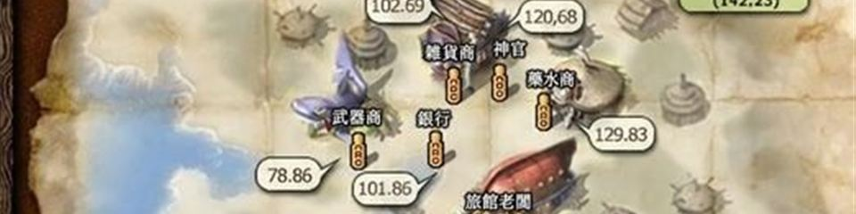

神之領域
日版資料庫
怪物
人物能力值
技能
道具
任務
製作・強化
武器
防具・飾品
衣服（身體防具）
地圖
商店
商城道具
寵物・守護動物
活動
系統操作
官方公告
討論區・雜項

商
商店
NPC 商店販售表・共 18 頁
道具/商店販售資訊
道具/商店販售資訊/交流廣場
道具/商店販售資訊/付費行動商店
道具/商店販售資訊/伊卡洛斯
道具/商店販售資訊/卡雷瓦拉
道具/商店販售資訊/寰宇廣場
道具/商店販售資訊/斯歐米
道具/商店販售資訊/櫻花村
道具/商店販售資訊/海盜要塞
道具/商店販售資訊/盧亞斯
道具/商店販售資訊/米魯里斯
道具/商店販售資訊/艾德安德
道具/商店販售資訊/萊貝雅
道具/商店販售資訊/邁索西亞圖書館
道具/商店販售資訊/邁索西亞市場
道具/商店販售資訊/阿尼姆斯
道具/商店販售資訊/魔界村
道具/商店販售資訊/魯克西翁